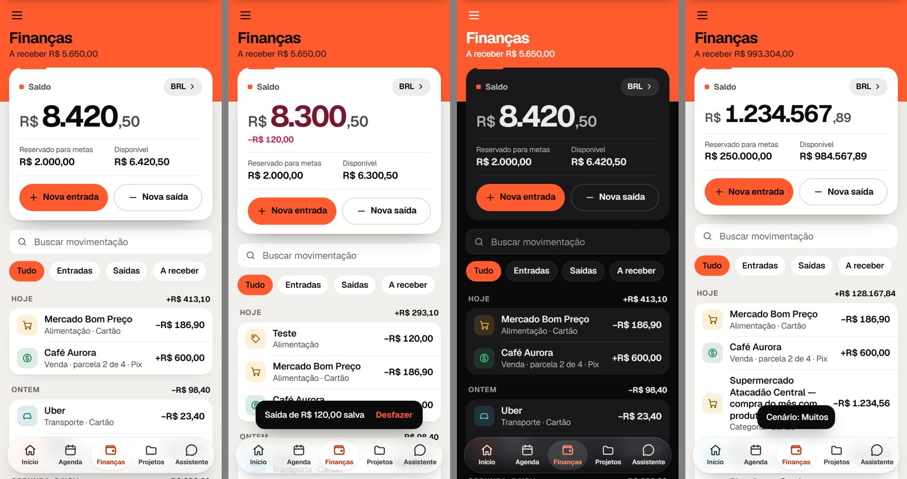
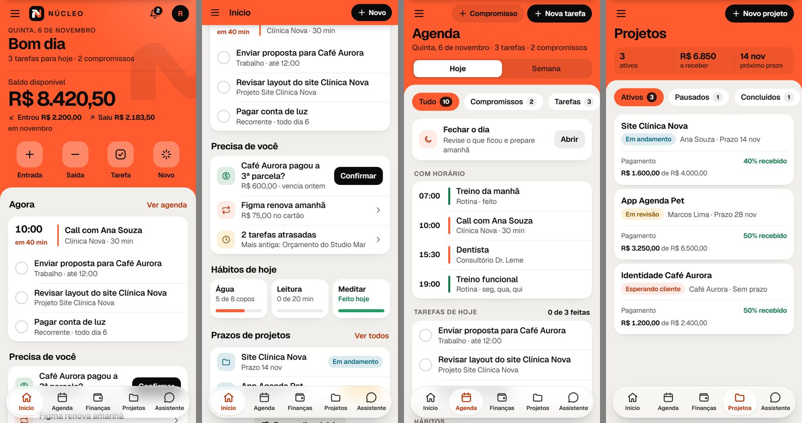
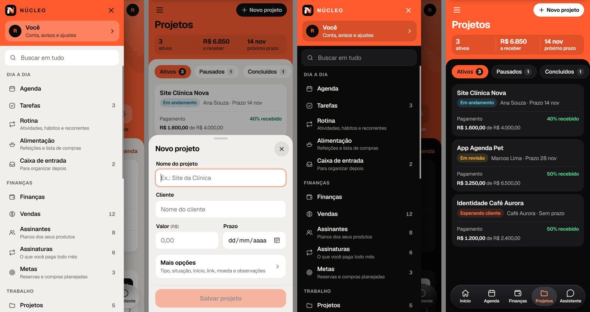

feat/redesign-proposta (base main f0b3242)Um Núcleo mais simples de usar, inteiro
O laranja do Núcleo volta a abrir cada tela numa faixa contínua. O menu ☰ continua, mais organizado e com a busca dentro dele. O Assistente ganha uma aba na barra flutuante de vidro, e os nomes passam a dizer o que cada botão faz.
Revisão 4: o nome volta a ser Finanças (barra, menu, títulos e textos) e a tela de Finanças recupera o cartão de saldo do app atual, com as mesmas informações e funções, no acabamento novo.
Revisão 3: cabeçalhos com tamanho proporcional à função (grande no Início, médio nas telas internas, compacto no Assistente), menos decoração repetida, percentuais de projeto explicados como pagamento recebido, hábitos com informação completa, menu mais enxuto, ações específicas ("Nova tarefa", "Novo projeto") e barra de vidro com destaque mais leve. Testado com listas vazias e cheias, nomes longos e valores grandes.
Revisão 2: topo laranja grande no Início (cabeçalho, saudação, saldo e atalhos numa só área), menu ☰ mantido, Assistente no lugar de Buscar na barra, mais laranja em cabeçalhos, ações e seleções, vidro da barra mais visível e nenhum botão flutuando sobre o conteúdo.
Nada foi alterado no app publicado. O escopo final continua sendo o aplicativo inteiro. Dados, contas, segurança, cálculos, automações e notificações continuam iguais. As mudanças de comportamento estão separadas na seção 6 e continuam pendentes.
1. Diagnóstico
Examinei as 35 telas do app, a navegação, os componentes compartilhados e os fluxos principais. Os problemas abaixo são concretos e estão no código atual.
| Problema | Onde aparece | Efeito |
|---|---|---|
| A navegação mora em três lugares | Barra inferior (Início + 3), menu lateral ☰ com 7 grupos, e 6 botões no topo do Início (menu, sino, Assistente, Buscar, Configurações). Shell.tsx, SideMenu.tsx, HomePage.tsx | Não existe um caminho óbvio. O Assistente aparece em 4 lugares; outras funções, em nenhum lugar visível. |
| Funções escondidas | Lembretes só se acessam por Configurações ou Notificações. Planejamento só por Rotina e Alimentação. Modo Foco só dentro de uma tarefa, de um hábito ou do Modo Manhã. A escolha das abas e das seções fica dentro de Configurações. | Você mesmo não encontra recursos que existem. |
| Três telas de importação | "Importação inteligente" (/intake), "Importar extrato" (/import) e "Extratos importados" (/imports), cada uma num caminho diferente. | Não fica claro qual usar, nem onde está o que já foi importado. |
| O mesmo dia em seis telas | Hoje, Agenda, Rotina (aba Hoje), Hábitos (seção Hoje), Recorrentes (seção Hoje) e o cartão de foco do Início. A Agenda já reúne compromissos, tarefas, rotina, hábitos e recorrentes. "Semana" (revisão com Score) tem o mesmo nome da vista Semana da Agenda. | A pessoa não sabe onde olhar nem onde marcar algo como feito. |
| Nomes ambíguos | No Início, "Criar" abre a frase inteligente, "Adicionar" registra uma entrada de dinheiro e "Retirar" registra uma saída. O formulário diz "Retirar dinheiro", o que soa como sacar ou tirar de uma meta. Botões finais usam "Adicionar", "Criar" ou "Salvar" para a mesma ação. | A pessoa precisa adivinhar o que o botão faz. |
| Duas portas para criar | O "+" flutuante guarda na Caixa de entrada (ou faz a ação da tela); a folha "Criar" entende frases. Início e Financeiro não têm "+". | O mesmo gesto faz coisas diferentes em cada tela. |
| "Metas" com quatro sentidos | Metas de compra (/goals), metas com reserva no Financeiro, Metas da semana e Objetivos em Vida. Também "Projetos de trabalho" e projetos pessoais em Vida. | Confusão sobre onde cada meta vive e se o dinheiro é reservado. |
| Laranja em todo lugar | Toda tela abre com uma faixa vermelhão. Barra de status, setas, links e item atual também são laranja (PageHeader, .band em index.css). | O laranja deixa de indicar "aja aqui" e tudo disputa atenção. |
| Início sem prioridade | Até 12 blocos fixos: saldo, 4 atalhos, foco do dia, "Esperando você", "Feito pelo Núcleo", sugestão, atenção, movimentações, tarefas, projetos, metas, cobranças. Não dá para escolher nem ordenar. | O que importa hoje se perde no meio do resto. |
| Formulários longos | Venda tem 15 campos, Projeto 11, Assinatura 10, Tarefa 7. Só Venda, Hábito e Refeição separam "Mais opções". Projeto pede Moeda, Link e "Terminou em" junto com o Nome. | Cadastrar algo simples parece trabalhoso. |
| Letra pequena | Corpo de 15 px; rótulos, subtítulos e nomes das abas com 12 a 13 px. A Apple recomenda 17 pt para texto de leitura no iPhone e 11 pt como mínimo. | Cansa a leitura e piora a acessibilidade. |
| Configurações numa página só | 12 grupos misturados: conta, automações, seções, assistente, aparência, saldo, câmbio, cofre, backup, diagnóstico. | É difícil achar um ajuste específico. |
2. Organização e navegação
Três caminhos, cada um com uma função
- Barra flutuante: Início · Agenda · Finanças · Projetos · Assistente. As três abas do meio continuam personalizáveis (Você → Barra inferior). Início e Assistente ficam fixos. A aba Assistente abre direto a conversa, com o mesmo ícone de balão que o app usa hoje.
- Menu ☰ no canto superior esquerdo, em todas as telas principais. Ele mostra todas as áreas, agrupadas pelo que fazem, cada uma com uma frase curta e o número de itens. No topo ficam o acesso a Você e o campo Buscar em tudo. A busca filtra o próprio menu e encontra seus registros (projetos, clientes, movimentações, tarefas). Uma pergunta (terminada em "?") oferece "Perguntar ao Assistente". A escolha de tema também fica no menu.
- Topo de cada tela (faixa laranja), em três tamanhos:
- Grande, só no Início: cabeçalho, saudação, saldo e atalhos.
- Médio, nas telas internas: ☰ e as ações na mesma linha, o título embaixo e só o número que importa naquela tela. Sobra mais espaço para o conteúdo.
- Compacto no Assistente: uma linha só, com ☰ e o nome, para priorizar a conversa.
- Ações com nome e destino específicos: cada botão abre direto o formulário certo.
- Agenda: "Nova tarefa" e "Compromisso".
- Finanças: "Nova entrada" e "Nova saída", no cartão de saldo.
- Projetos: "Novo projeto".
- Detalhe do projeto: "Registrar pagamento" e "Nova tarefa", já ligada ao projeto.
- A folha geral "Novo", com a frase e todos os tipos, continua no Início.
- No computador, o menu ☰ fica aberto como barra lateral permanente, com os mesmos grupos.
O menu ☰ por dentro
| Grupo | Itens (com uma frase do que fazem) |
|---|---|
| Topo | Você (conta, avisos e ajustes) e Buscar em tudo |
| Dia a dia | Agenda (hoje e semana), Tarefas, Rotina (atividades, hábitos e recorrentes), Alimentação (refeições, lista de compras e planejador), Caixa de entrada |
| Finanças | Finanças (saldo, movimentações, a receber, resumo do mês), Vendas, Assinantes, Assinaturas, Metas (reservas e compras planejadas) |
| Trabalho | Projetos, Clientes, Portfólio |
| Planejamento | Revisão da semana (Score, metas da semana, sequências, desafios), Vida (projetos pessoais, objetivos, evolução) |
| Guardados | Anotações, Senhas |
| Ferramentas | Assistente, Automações (histórico e regras), Importar (uma tela, com histórico), Notificações e lembretes, Modo Foco |
| Conta e ajustes | Você, Personalizar (Início, barra inferior e seções visíveis) |
Menu mais fácil de percorrer: cada linha tem um ícone pequeno sem caixa, o nome e o número de itens, com altura de 46 px. A explicação curta aparece só onde o nome não basta:
- Rotina, Alimentação e Caixa de entrada;
- Assinantes, Assinaturas e Metas;
- Portfólio, Revisão da semana e Vida;
- Automações, Importar e Modo Foco.
Funções que hoje estão escondidas ganham uma linha própria: Lembretes, Modo Foco e Personalizar.
Hoje, Agenda, Rotina, Hábitos e Semana
Agenda é onde se vê e se marca o dia. Rotina é onde se configura o que se repete. A Revisão da semana olha para trás e planeja a próxima.
- Agenda › Hoje mostra compromissos, tarefas, atividades da rotina, hábitos e recorrentes, com filtros. Os rituais da tela Hoje ("Começar o dia", "Fechar o dia") aparecem como cartão no horário certo.
- Agenda › Semana mostra os dias com seus itens.
- Rotina tem três abas, Atividades, Hábitos e Recorrentes, para criar e ajustar.
- Revisão da semana traz Score, check-in, metas, sequências e desafios.
Nenhuma regra muda: os mesmos itens aparecem nos mesmos dias, com os mesmos lembretes. A unificação de Hoje com Agenda continua pendente (C1).
Início: a central do seu dia
Uma área laranja contínua, de ponta a ponta, reúne:
- Cabeçalho: ☰, o "N" com NÚCLEO, notificações e Você.
- Data e saudação, com o resumo do dia.
- Saldo disponível e o que entrou e saiu no mês.
- Quatro atalhos redondos: Entrada, Saída, Tarefa e Novo.
O conteúdo sobe sobre o laranja com cantos arredondados, e os blocos vêm em ordem de prioridade (você escolhe quais aparecem e em que ordem):
- Agora: o próximo compromisso e as tarefas de hoje, que dá para marcar ali mesmo.
- Precisa de você: pagamentos a confirmar, cobranças próximas e tarefas atrasadas.
- Hábitos de hoje: cartões com nome, quantidade e unidade completas ("5 de 8 copos", "0 de 20 min", "Feito hoje") e uma barra fina. Um toque registra mais um. Depois, prazos de projetos.
- Disponíveis para ligar: movimentações recentes, metas, próximas cobranças e "Feito pelo Núcleo".
3. Nomes das ações
Regra única: o botão diz o verbo e a coisa. Criar diz "Salvar tarefa", editar diz "Salvar alterações", apagar diz "Excluir…" e pede confirmação.
| Hoje | O que faz de verdade | Proposta |
|---|---|---|
| Início: "Criar" | Abre a frase inteligente ou os botões de cada tipo | Atalho Novo e botão "+ Novo" no topo → folha Novo |
| Início: "Adicionar" | Registra dinheiro que entrou | Entrada; formulário "Nova entrada"; botão "Salvar entrada" |
| Início: "Retirar" / "Retirar dinheiro" | Registra dinheiro que saiu | Saída; formulário "Nova saída"; botão "Salvar saída" |
| Formulários: "Adicionar", "Criar" | Salvam um item novo | Salvar <coisa> ("Salvar refeição", "Salvar assinatura") |
| "Capturar" | Guarda um texto na Caixa de entrada | Guardar para organizar depois |
| Financeiro | Saldo, movimentações, a receber, resumo | Finanças, o nome que você escolheu, também usado no grupo do menu e na aba |
| Metas de compra / metas com reserva | Comprar algo / separar dinheiro | Metas › Compras planejadas e Metas › Reservas |
| Semana | Revisão com Score, metas e desafios | Revisão da semana |
| Feito pelo Núcleo / Minhas regras | Histórico e regras de automação | Automações › Histórico e Automações › Regras |
| Importação inteligente / Importar extrato / Extratos importados | Trazer dados de arquivos | Importar (uma tela; histórico embaixo) |
| Configurações | Ajustes do app e da conta | Você (perfil, avisos, personalização, dados), aberto pelo menu ☰ ou pela inicial no Início |
4. Padrão visual
O laranja é a identidade e a estrutura do Núcleo: abre cada tela, marca o que está selecionado e a ação principal. O conteúdo fica em superfícies calmas para a leitura não cansar. O mesmo sistema vale no claro e no escuro, no celular e no computador.
Tipografia (Geist)
| Estilo | Tamanho / peso | Uso |
|---|---|---|
| Título grande | 34 px · 650 · -0,035 em | Nome da tela (um por tela) |
| Valor de destaque | 40 px · 650 · algarismos alinhados | Saldo do Início, valor no formulário (46 px) |
| Título de seção | 20 px · 650 | "Agora", "Pagamentos" |
| Corpo e título de linha | 17 px · 400/550 | Textos, nomes nas listas, campos |
| Secundário | 15 px · 400 | Subtítulos das linhas, notas |
| Rótulo | 13 px · 600 | Rótulos de grupo e de número |
| Mínimo | 11,5 px · 600 | Só nos nomes da barra inferior |
Licenças. A Geist já está no app (SIL Open Font License 1.1) e pode ser usada na web, no Android e no computador. Não uso a SF Pro: a licença da Apple permite só maquetes para plataformas Apple e proíbe embutir a fonte em produtos. Os ícones continuam sendo Lucide (licença ISC, já no app). Não uso SF Symbols, que são exclusivos das plataformas Apple.
Espaço e forma
Cor: onde o laranja aparece
- Faixa laranja contínua no topo de toda tela, incluindo a área da barra de status do iPhone, com o tamanho de acordo com a função (grande, médio ou compacto).
- No modo claro, textos, títulos e ícones sobre a faixa são pretos (contraste de 6,4:1).
- No modo escuro, ficam brancos e sólidos, como no app atual: o laranja é o mesmo e a hierarquia vem do tamanho e do peso. Os botões escuros da faixa viram brancos com texto escuro.
- A troca de tema atualiza as cores na hora.
- Decoração com função, sem repetir:
- o brilho suave e o "N" em marca-d'água ficam só no Início;
- as telas internas usam laranja liso;
- os títulos de seção não têm mais marcador;
- cartões e painéis não usam degradê.
- Laranja que orienta:
- chip de filtro ativo, opção escolhida, dia escolhido e interruptores ligados;
- tarefas concluídas;
- a linha do próximo compromisso e o painel do valor nos formulários;
- ícones de itens que pedem ação e links em laranja escuro (#b8350c no claro, #ff7a4f no escuro).
- Pagamentos recebidos em verde: a barra de pagamento dos projetos é verde e sempre vem com a legenda "Pagamento · 40% recebido" e o valor ("R$ 1.600,00 de R$ 4.000,00"). A situação do trabalho (Em andamento, Em revisão…) fica no selo ao lado do cliente. Assim, andamento e pagamento não se confundem.
- Vermelho-rosa para alertas e exclusão, âmbar para atenção e azul-petróleo para previsto e a receber. Saídas ficam na cor do texto.
Finanças: o cartão de saldo de volta
A tela de Finanças mantém o cartão de saldo que existe hoje (BalanceCard), com as mesmas informações e funções e o acabamento novo. Ele fica meio sobre a faixa laranja, numa superfície neutra. O laranja aparece em três pontos: um traço curto no topo, o quadradinho ao lado de "Saldo" e o botão principal.
- Saldo com a escolha da moeda de exibição no canto. Muda só como o saldo aparece; com outra moeda, a linha de cotação aparece embaixo.
- Valor grande: a parte inteira em destaque, símbolo e centavos menores. Ele diminui sozinho em valores de milhões para não sair do cartão.
- Variação depois de um lançamento (por exemplo "−R$ 120,00"), por alguns segundos. O número conta até o novo saldo em 0,75 s; com "Reduzir movimento", troca na hora.
- Reservado para metas / Disponível, só quando alguma meta reserva dinheiro do saldo.
- Nova entrada (laranja) e Nova saída (contorno). Fazem o mesmo que "Adicionar" e "Retirar" de hoje; só o nome muda (C8).
Com o cartão, a faixa de Finanças fica média e mostra só o título e o valor a receber. As ações saíram da faixa para não aparecerem duas vezes.

Componentes
| Peça | Padrão |
|---|---|
| Botões | Principal (laranja, um por tela), Secundário (cinza translúcido), Escuro (confirmação dentro de cartões), Texto (link). Altura 50 px, ou 36 px no compacto. |
| Listas | Grupos com cantos arredondados; linha com ícone em quadrado suave (38 px), título 17 px, detalhe 15 px, valor ou seta à direita; divisória a partir do texto. |
| Filtros | Chips em cápsula de 38 px com contador; o ativo fica preenchido. |
| Período e tipo | Controle segmentado de 2 a 4 opções. |
| Formulários | Folha que sobe de baixo; o essencial primeiro (valor em destaque, descrição, categoria, data); "Mais opções" fechado, dizendo o que tem dentro; botão final fixo e desativado enquanto falta o obrigatório; desfazer depois de salvar. |
| Detalhe | Situação (selo), título grande, número principal com progresso, dois fatos lado a lado, seções; ação principal fixa embaixo; "Editar" em cima; ações raras em "⋯"; Excluir sempre por último e em vermelho. |
| Telas vazias | Uma frase do que aparecerá ali e uma ação. |
| Movimento | Folhas sobem com mola curta e aba ativa sem atraso. Com "Reduzir movimento", tudo vira troca imediata ou esmaecer. |
A barra inferior de vidro
- Cápsula de 64 px, 12 px das laterais e 10 px acima da área segura do iPhone (
env(safe-area-inset-bottom)), com largura máxima de 460 px. Nomes de uma palavra abaixo dos ícones. - Vidro: fundo translúcido em leve degradê vertical, com desfoque de 14 px e saturação. O conteúdo que rola por trás aparece desfocado.
- Borda e sombra mais suaves: borda finíssima quase invisível, um reflexo leve no topo e sombra externa suave.
- Aba ativa mais leve: deixa de ter fundo marrom ou alaranjado.
- No claro, uma superfície branca translúcida integrada ao vidro, com sombra mínima e ícone e nome em laranja escuro (#b8350c), com contraste de pelo menos 4,5:1.
- No escuro, um clarão discreto, com ícone e nome em laranja claro (#ff8f6b).
- As outras abas ficam em tom escuro (claro) ou claro (escuro), bem legível.
- Fundo alternativo: sem desfoque disponível (
@supports) ou com "Reduzir transparência" ligado, a mesma barra com fundo sólido. - Teclado aberto: a barra e as ações presas embaixo descem e somem. O campo de conversa do Assistente desce até a borda.
- Nada fica escondido: a margem inferior é calculada (barra + área segura + 24 px) e cresce nas telas com ação presa embaixo ou campo de conversa.
- O efeito usa CSS padrão da web (
backdrop-filter), sem depender de recurso nativo da Apple.
Proporções
Comparadas à primeira versão da prévia, as proporções ficaram mais justas:
- linhas de lista com 56 px;
- títulos de seção com 19 px e menos espaço acima;
- chips com 36 px;
- cartões com 18 px de canto;
- hábitos em cartões com o texto completo e uma barra fina;
- cabeçalho médio nas telas internas, bem mais baixo que o do Início (sem saldo grande nem atalhos).
O texto de leitura continua em 16,5 a 17 px e toda área tocável mantém pelo menos 44 px.
5. A prévia
É uma página separada, com dados fictícios. Ela não usa o banco, a conta nem o código publicado.


- Início com a área laranja contínua.
- Menu ☰: busca, todas as áreas e o tema.
- Agenda: Hoje e Semana, com filtros.
- Finanças: cartão de saldo, busca, filtros e a vista A receber.
- Projetos e o detalhe Site Clínica Nova.
- Nova saída / Nova entrada: funciona de verdade, salva na lista e oferece desfazer.
- Novo (no Início): frase ou tipo.
- Nova tarefa, Novo compromisso, Novo projeto e Registrar pagamento: formulários específicos, que funcionam de verdade.
- Assistente: só o visual. A tela avisa que as mensagens são exemplos fixos e que ali ele não responde; nada mostrado representa recurso do Assistente real.
- Você: tema e barra sem transparência.
O que funciona e o que é demonstração
| Funciona de verdade (com dados fictícios) | Só demonstração |
|---|---|
|
|
Verificação no tamanho do iPhone
Rodei uma checagem automática nas larguras de 390 px (iPhone 12 a 16) e 375 px (iPhone SE e mini). Ela cobriu:
- os modos claro e escuro;
- os cenários Normal, Muitos (nomes longos, valores na casa do milhão e listas extensas) e Vazio;
- todas as telas da prévia, as vistas Semana e A receber e o menu aberto.
Em cada tela, ela procurou rolagem horizontal, texto cortado, texto saindo da tela e o último conteúdo atrás da barra. Resultado: nenhum problema encontrado. As capturas também foram conferidas visualmente; o que apareceu foi corrigido antes de publicar (valor de pagamento quebrando no meio, balão da conversa sem cor no escuro). Os dez fluxos testados funcionaram:
- Novo projeto, Nova tarefa e Novo compromisso abrem o formulário certo e o item aparece na tela;
- o botão salvar fica desativado até o nome ser preenchido;
- Registrar pagamento leva o projeto a 100% recebido;
- o hábito registra mais um;
- a folha geral "Novo" continua no Início.
6. Mudanças de comportamento pendentes
As revisões 2 e 3 aprovaram só ajustes visuais e de organização da proposta e da prévia. Nenhuma mudança de comportamento abaixo está aprovada. Nenhuma delas muda dados, cálculos, sincronização, login, automações, regras, lembretes ou notificações, nem apaga funções.
| # | Mudança | Antes → depois | Situação |
|---|---|---|---|
| C1 | Hoje entra na Agenda | Seção Hoje separada → vista "Hoje" da Agenda, com os rituais da manhã e da noite. Links #/today levam para a Agenda; "Abrir Modo Manhã ao abrir o app" continua. | Pendente |
| C2 | O menu fica, reorganizado, com a busca dentro. | Retirada a seu pedido | |
| C3 | Ações de criar | "+" flutuante (captura) e folha "Criar" → ação principal no topo de cada tela + folha "Novo" no Início. "Guardar para organizar depois" continua como opção da folha. | Pendente (sem botão flutuante) |
| C4 | Configurações viram Você | Página longa → grupos curtos, abertos pelo menu ☰ ou pela inicial no Início. Mesmas opções; #/settings continua funcionando. | Pendente |
| C5 | Início personalizável | Blocos fixos → blocos que você escolhe e ordena. A ordem padrão é a da seção 2. | Pendente |
| C6 | Rotina reúne Hábitos e Recorrentes | 3 seções soltas → 1 seção com 3 abas. Cada parte continua podendo ser escondida. | Pendente |
| C7 | Importar unificado | 3 telas → 1 tela com histórico, mantendo os mesmos fluxos e o desfazer. | Pendente |
| C8 | Novos nomes | Tabela da seção 3; o nome da seção passa a ser "Finanças", por sua escolha. A busca e o Assistente aprendem os nomes antigos como sinônimos. | Pendente |
| C9 | Assistente fixo na barra | Início + 3 escolhidas → Início + 3 escolhidas + Assistente. As 3 abas que você escolheu continuam; o Assistente sai do topo do Início. | Aprovado como direção da prévia; implementação pendente |
| C10 | Busca dentro do menu | Tela Buscar separada → campo "Buscar em tudo" no topo do menu ☰. O atalho "/" do teclado no computador continua. | Aprovado como direção da prévia; implementação pendente |
| C11 | Barra laranja compacta com ação | Barra compacta só com o título → título + ☰ + ação específica da tela ao rolar | Pendente |
| C12 | Ações específicas por tela | Hoje o "+" de cada tela abre a ação daquela tela ou a captura na Caixa de entrada → botões com nome específico que abrem direto o formulário:
| Pendente, para sua avaliação |
7. Todas as telas e como recebem o padrão
Cada tela usa um de seis modelos. Mudam o visual e a organização; o conteúdo e as regras ficam.
| Modelo | Telas | O que muda |
|---|---|---|
| Painel | Início, Finanças (resumo do mês), Revisão da semana, Vida (evolução), Score | Faixa laranja (grande no Início, média nas demais) com o número principal; blocos em grupos; gráficos com a mesma escala de cor. |
| Lista | Agenda, Tarefas, Rotina (3 abas), Alimentação, Caixa de entrada, Movimentações, Vendas, Assinantes, Assinaturas, Metas, Projetos, Clientes, Portfólio, Anotações, Senhas, Notificações, Automações, Regras | Chips com contador; linhas de 60 px; busca no topo onde há muitos itens; tela vazia com uma ação. |
| Detalhe | Projeto, Cliente, Venda, Comprador, Assinante, Assinatura, Meta, Hábito, Projeto pessoal, Objetivo, Anotação, Senha, Movimentação | Situação, título, número principal, fatos, seções; ação principal fixa; "Editar" em cima; "⋯" para o raro. |
| Formulário | Tarefa, Compromisso, Entrada/Saída, Venda, Pagamento, Projeto, Cliente, Assinatura, Assinante, Plano, Meta, Hábito, Atividade, Refeição, Recorrente, Regra, Lembrete, Senha | Essencial primeiro e "Mais opções" com resumo. Exemplos: Venda (cliente, o que vendeu, valor e já recebeu?), Projeto (nome, cliente, valor e prazo), Assinatura (nome, preço e recorrência). Botão "Salvar <coisa>". |
| Fluxo | Boas-vindas, Entrar/Criar conta, Importar, Planejamento, Modo Foco, Começar e Fechar o dia, Assistente | Uma pergunta por passo, progresso visível, botão principal fixo, sempre com "Voltar". |
| Ajustes | Você, Conta, Lembretes, Seções, Barra, Início, Moedas, Cofre, Backup, Diagnóstico | Grupos curtos com nomes de tarefa ("Trocar senha do cofre"), interruptores à direita e uma explicação de uma linha. |
8. Etapas de implementação (depois da sua aprovação)
- Base: cores, tipografia e componentes compartilhados (botões, linhas, chips, segmentado, folha, campos, faixa laranja do topo e barra compacta) e a barra flutuante de vidro.
- Navegação: menu ☰ reorganizado com a busca, aba Assistente, Você, ações no topo e os links antigos redirecionados.
- Início personalizável.
- Dia a dia: Agenda com Hoje, Rotina com 3 abas, Revisão da semana.
- Finanças: Finanças (com o cartão de saldo), Vendas, Assinantes, Assinaturas, Metas e Importar.
- Trabalho, Planejamento, Guardados e Ferramentas.
- Computador, acessibilidade (contraste, foco, leitores de tela, texto ampliado) e revisão completa no claro e no escuro.
Cada etapa roda os testes automáticos (unitários e de tela) antes de seguir. Os testes só mudam quando o texto ou o lugar mudou de propósito, e cada mudança é explicada. Nada vai para a main nem para o site sem a sua aprovação.